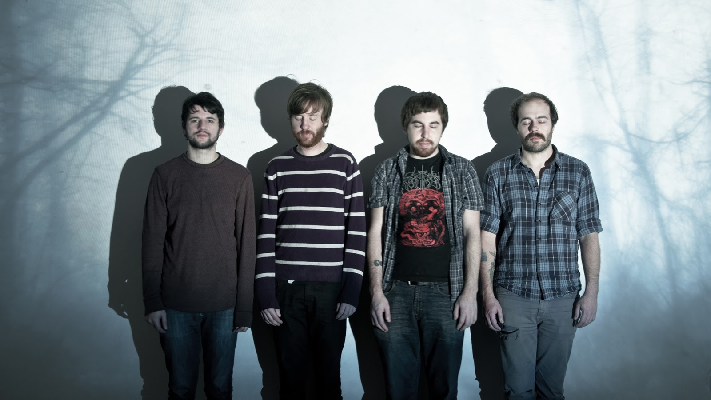

Закрыть
Галерея
Godspeed You! Black Emperor - (с англ. — «Бог тебе в помощь, Чёрный император!») — канадская пост-рок-группа,
возникшая в Монреале, Квебек. Основанный в 1994 году ансамбль стал влиятельным в своём жанре, многие коллективы указывали
его как оказавшего влияние на их музыкальное творчество. Ранее группа носила название Godspeed You Black Emperor!, часто
используются аббревиатуры GYBE или GY!BE.
Группа никогда не имела вокалиста. Работая в близком к оркестру масштабе,
коллектив из девяти человек известен своим использованием широкого динамического диапазона; необычным использованием
инструментов и звуков; удлинёнными композициями, написанными почти классически, состоящими из нескольких частей; и
использованием искусства и визуальных образов как в оформлении обложек альбомов, так и в живых выступлениях.
С 2003 года Godspeed находился «в отпуске на неопределённое время», так как участники группы заняты во многих
других проектах, однако они ясно говорили, что группа не распалась, ежегодно собираясь для обсуждения возможности
продолжить совместную работу. 9 апреля 2010 года группа объявила о воссоединении и в январе 2011 года провела
европейское турне.
Подробнее...
Закрыть
Галерея
God Is an Astronaut (gɔd.iz.æn.ˈæstrɘnɔ:t; рус. Бог — астронавт) — ирландский
инструментальный коллектив, исполняющий музыку в жанре пост-рок.
Группа была образована братьями-близнецами Niels-ом и Torsten-ом Кинселла в 2002 году.
Идея названия группы им пришла при просмотре фильма Клайва Баркера «Nightbreed». Группа выпустила свой
первый альбом The End of the Beginning на собственном лейбле Revive Records.
Текущий состав:
Торстен Кинселла (Torsten Kinsella) — гитара, вокал, клавишные (с 2002)
Нильс Кинселла (Niels Kinsella) — бас-гитара, гитара, визуальные эффекты (с 2002)
Ллойд Ханни (Lloyd Hanney) — ударные (с 2003)
Джейми Дин (Jamie Dean) — клавишные, синтезатор, гитара, вокал (2011—2017, 2020-настоящее время)
Подробнее...
 |
Закрыть
Галерея
This will destriy you This Will Destroy You (TWDY) — американская пост-рок-группа,
образованная в 2005-м году в Сан-Маркос, штат Техас.
Группа состоит из четырёх человек: Крис Кинг, Донован Джонс, Джереми Галиндо, Алекс Бор и записывается под лейблом Magic
Bullet Records.
В 2005 году в количестве 250 копий они выпустили свой первый мини-альбом Young Mountain, который первоначально был
демозаписью группы. Пластинка получила восторженные отзывы и впоследствии в 2006-м году была выпущена более значительным
тиражом. В феврале 2007-го музыканты приступили к записи своего дебютного альбома, который вышел в свет в январе 2008-го
под одноимённым названием This Will Destroy You.
В ноябре того же года из группы ушел Эндрю Миллер.
На замену ему взяли Алекса Бхора.
Выпущенный в мае 2011 года альбом Tunnel Blanket занял 25 место в рейтинге Billboard.
Подробнее...
|  | |
Закрыть
Ранние прецеденты
Построк появился и развивался под влиянием группы конца 1960-х — The Velvet Underground. Краут-рок 1960-х и 70-х также немало повлиял на жанр, в частности, через приём «моторик». Британская группа Public Image Ltd стала пионером жанра, её журнал New Musical Express описывал как «возможно, первую построк-группу». Во втором своём альбоме Metal Box (1979) группа почти полностью отказалась от традиционных приёмов рока в пользу плотных краут-мелодий. Третий альбом — The Flowers of Romance (1981) стал ещё более радикальным, подчёркивая использование перкуссии и многоканальности музыки. Движение шугейзинга конца 1980-х и начала 90-х также стало предшественником построка. Например, группа My Bloody Valentine уделяет внимание неортодоксальным, слоистым гитарным текстурам, нежели традиционным гитарным мелодиям.
1990-е
Такие группы начала 1990-х, как Slint, или более ранние, как Talk Talk, были признаны группами, повлиявшими на построк. Альбомы Slint Spiderland и Talk Talk Laughing Stock считаются альбомами, сформировавшими построк как таковой. ервоначально использовавшийся для описания музыки таких групп, как Stereolab, Laika, Moonshake, Seefeel, Bark Psychosis и Pram, построк вырос до смеси джаза и краут-рока. Музыка носила инструментальный характер, приобретя оттенок электроники после 1994 года. Отправной точкой для многих значимых групп построка стал Монреаль, где такие группы, как Godspeed You! Black Emperor, A Silver Mt. Zion, Do Make Say Think, Fly Pan Am записывались на лейбле Constellation. Эти исполнители обычно характеризуются, как варьирующие между конкретными жанрами, исполняющие композиции с элементами джаза и камерной музыки. Godspeed You! Black Emperor и шотландская группа Mogwai стали самыми влиятельными группами построка того времени, продолжив свою карьеру в 21-м веке.
2000-е
Группа Sigur Rós после выпуска альбома Ágætis Byrjun в 1999 году стала одной из популярнейших групп построка 2000-х. Композиции с их пятого альбома Með suð í eyrum við spilum endalaust, вышедшего в 2008 году, ротируются на радио и телевидении, что является редким явлением для построка. Это объясняется меньшей длиной треков и простой структурой песен. Помимо Sigur Rós, в рамках данного жанра известность обрели такие группы, как Hammock, Explosions In the Sky, Pelican, Sonore, God Is An Astronaut, Maybeshewill, This Will Destroy You, Caspian и Mono. С некоторыми исключениями, для построк-групп 21-го века характерны: практически полный отказ от вокала; более частое использование цифровых эффектов и семпловых ритм-секций (Maybeshewill, 65daysofstatic); практически повсеместное использование тематических видеорядов на концертах (God Is An Astronaut) для подчеркивания атмосферы и идей музыкальных композиций; очень сильное влияние таких жанров как progressive metal, progressive rock.
Пост-рок (англ. Post-rock) — жанр экспериментальной музыки, для которого характерно использование инструментов, связанных с рок-музыкой, а также ритма, мелодий, тембра и последовательности аккордов, которые не характерны для традиционного рока. Представители жанра в основном играют инструментальную музыку. Музыка построка объединяет в себе элементы разнообразных музыкальных жанров, таких как эмбиент, джаз, электронная музыка, рок. Как и многие другие музыкальные термины, «построк» описывает самые разнообразные варианты звучания. Например, некоторые музыкальные группы классифицируются как построк, хотя между ними мало общего помимо того, что основную роль в их музыке играют ударные и гитары.